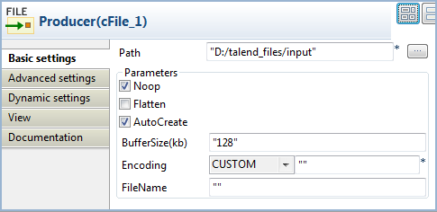
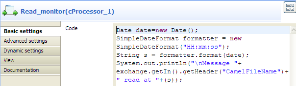
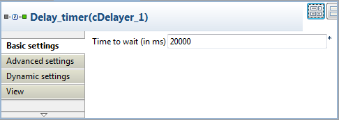
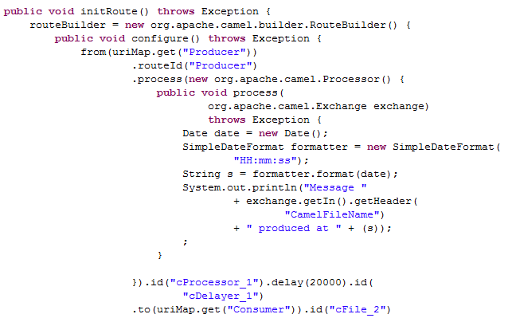
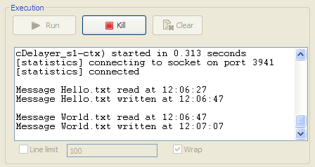

|
Component Family |
Processor | |
|
Function |
The cDelayer component delays the delivery of messages. | |
|
Purpose |
The cDelayer component allows you to set a latency in message routing. | |
|
Basic settings |
Time to wait (in ms) |
Fill this field with an integer (in milliseconds) to define the time to wait before sending the message to the subsequent endpoint. |
|
Usage |
This component is usually used in the middle of a Route. | |
|
Limitation |
n/a | |
In this scenario, a cDelayer component is used to delay the routing of each message to the destination endpoint by 20 seconds.
This use case requires one cDelayer component, two cFile components, and two cProcessor components.
From the Messaging folder of the Palette, drop two cFile components onto the design workspace, one as the message producer and the other as a message consumer.
From the Processor folder, drop two cProcessor components onto the design workspace, one next to the message producer component as the message producer monitor, and the other next to the message consumer component as the message consumer monitor.
From the Processor folder, drop one cDelayer component onto the design workspace, between the message producer monitor component and the message consumer component.
Connect the components using Row > Route connections.
Label the components to better identify their roles in the Route, as shown above.
Double-click the first cFile component, which is labelled Producer, to open its Basic settings view in the Component tab.
In the Path field, enter or browse to the path to the source files, and leave the other parameters as they are.
Repeat these steps to define the output folder in property settings of the second cFile component, which is labelled Consumer.
Double-click the first cProcessor component, which is labelled Producer_monitor, to open its Basics settings view in the Component tab.
In the Code area, customize the code to display the time each message is produced:
Date date=new Date(); SimpleDateFormat formatter = new SimpleDateFormat("HH:mm:ss"); String s = formatter.format(date); System.out.println("\nMessage "+ exchange.getIn().getHeader("CamelFileName")+ " produced at "+(s));Repeat these steps to configure the second cProcessor component, which is labelled Producer_monitor, to display the time each message is consumed:
Date date=new Date(); SimpleDateFormat formatter = new SimpleDateFormat("HH:mm:ss"); String s = formatter.format(date); System.out.println("Message "+ exchange.getIn().getHeader("CamelFileName")+ " consumed at "+(s));Double-click the cDelayer component, which is labelled Delay_timer, to open its Basic settings view in the Component tab.
In the Time to wait (in ms) field, enter the number of milliseconds by which you want to delay message delivery. Note that the value must be a positive integer.
In this use case, we want each message to be delivered after a 20-second latency.
Press Ctrl+S to save your Route.
Click the Code tab at the bottom of the design workspace to have a look at the generated code.
As shown in the code, a 20-second latency is implmented according to
.delay(20000)in message routingfromtheSourceendpoint.totheConsumerendpoint.Press F6 to execute the Route.
RESULT: Each source message is routed to the message consumer after a 20-second latency.
